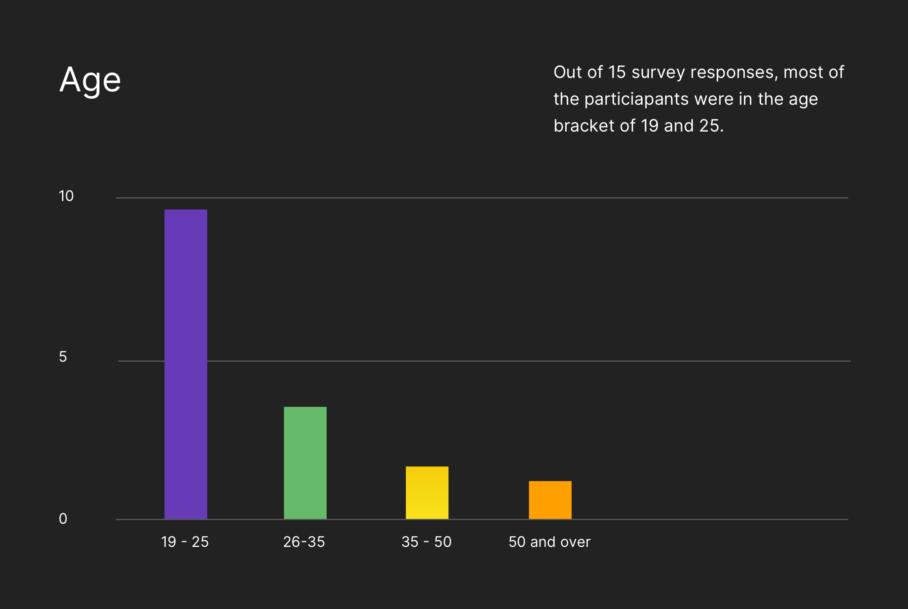
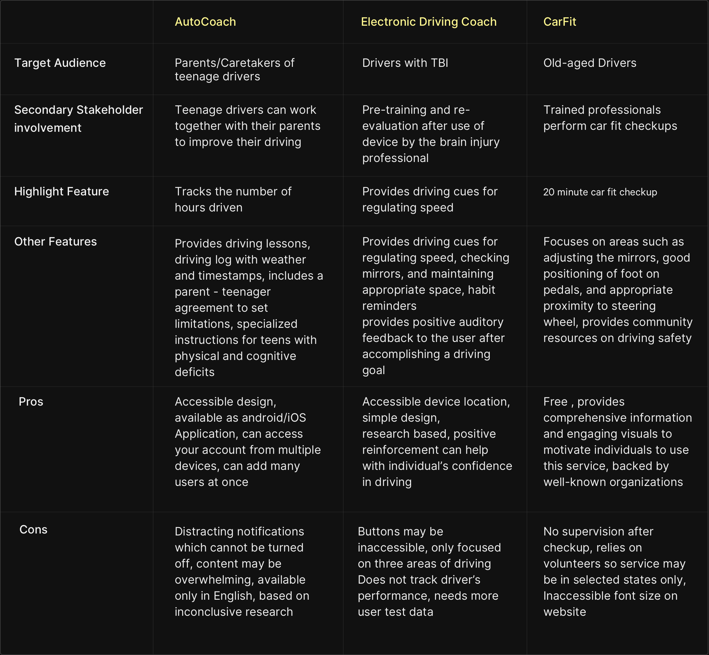
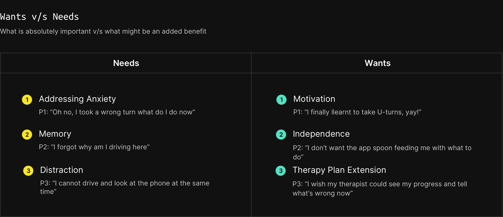
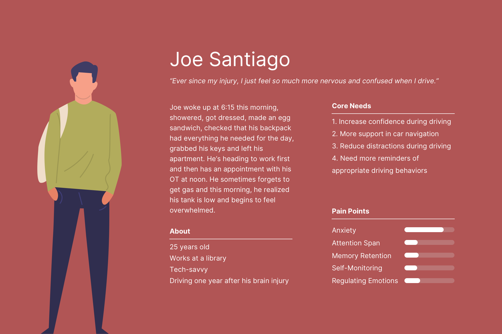
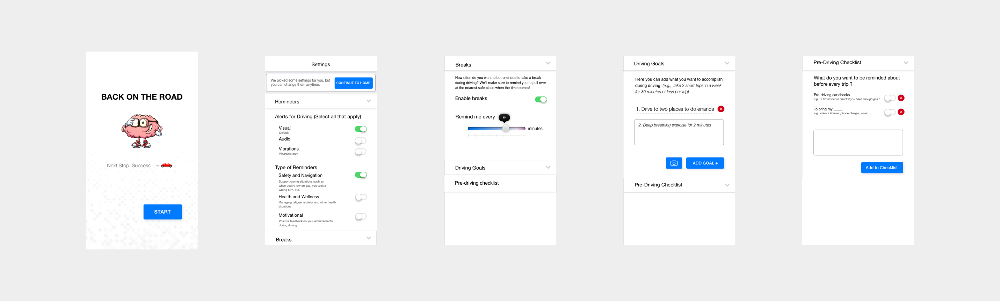
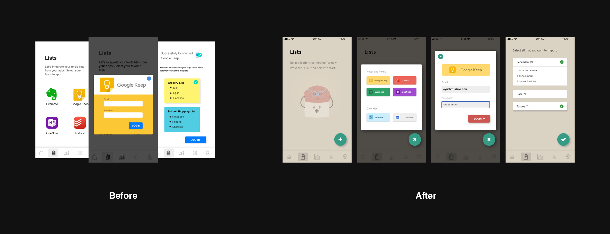

Domain
User Research, Interaction Design and Prototyping, Usability Testing
Type
Graduate Coursework [Group]
Timeline
Sept, 2018 - Dec, 2018 [3 Months]
1. Problem
The current state of car interfaces is increasingly digital - big bold touch screens, voice commands, and seamless media transfer from phone to the car. Despite these advancements, there have been few that address user's executive functioning. Returning to driving after a traumatic brain injury (TBI) can be intimidating - especially when every interaction is digital. For this project our team wanted to find out:
- What were the main issues faced by TBI survivors while driving
- What kind of cues would they be comfortable recieving while driving
- How big of a role do digital interfaces play in their driving/day-to-day experience
"How can we support traumatic brain injury survivors as they return to driving?"
Throughout the entire process, we found ourselves shifting gears - from conclusive observations to highly abstract thinking, and then back again into the nuts and bolts of the prototype. With every cycle of diverging and converging steps, we found ourselves a little but closer to the solution that fit the people we were designing for.
2. Approach
Before proceeding, it was crucial to know who we were designing for; our primary stakeholders were traumatic brain injury survivors who are returning to driving. Thinking through, we made an assumption - making sure to validate it from the initital insights - that our experience was likely to affect more than just TBI survivors. Therefore, our secondary stakeholders were anyone involved in the user's life in any form - from Occupational Therapists, Speech-Language Pathologists, to their friends, family members, or caregivers.

2.1 Surveys
We created a survey with 32 questions targeting individuals with TBIs who are currently driving. The survey included questions about a participant’s demographics, medical history, challenges with driving, driving habits, and their suggestions of what could improve their driving experience. There was a combination of short answer responses, long answer responses, and selection questions.
- 
-

-

-

-

2.2 Interviews
The next step was following up with people. We were able to interview nine TBI survivors, understanding the intricacies of their injury and its repercussions, asking about their personal inventory when they drive, their pain points, and their initial impressions of our design approach. In addition, we also interviewed some of the professionals in the field such as a Driving Rehabilitation Specialist, Occupational Therapist, and a Speech Language Pathologist to further gain insight into the details of a brain injury and its effect on cognitive processes.
View Interview notes"You should avoid imposing anything and curating solutions based on user suggestions as a suggestion from one use could potentially become a distraction for another."
2.3 Competitive Analyis
We looked up existing tools or programs that addressed driving safety for individuals with cognitive impairments.
2.4 Insight summary
- Anxiety - This is a recurring issue with TBI survivors. However, they are not necessarily anxious about their skills as a driver. Some cannot articulate their source of their anxiety - at times it was a chain reaction set off by one thing. Many cited memory and distractions as causes and often, anxiety led to fatigue or frustration.
- Memory - While their ability to drive is unaffected, some experienced forgetfulness as related to driving specifically (e.g. forgetting to check their blind spot or for traffic before making a right turn at a stop light); others forget generic tasks (e.g. an intended destination or purpose for being there)
- Distractability - For TBI survivors, anything can become a distraction, inside or outside of the car, moving or stationary. As a result, their reasons for distractions are highly individualized, at times even the things meant to reduce distraction.
- Independence - When asked why driving was important, “independence” was repeatedly a top hit. This not only confirmed the second part of our design rationale but also helped us understand the conflict TBI survivors are experiencing as they re-enter their lives.
3. Ideation
Once we narrowed down the insights and found out where the users are struggling the most, it was important to find where we, as designers, can intervene, and help remediate that possible bottleneck.
3.1 Design Opportunity
Based on our research findings, we found a recurring theme that popped out from the interviews; i.e. individualization. Instead of giving users a set of options, it was essential to give them the freedom to customize according to their comfort. This helped us further scope down the original design question to:
"How can we support traumatic brain injury survivors by reducing their cognitive load as they return to driving?"
3.2 Personas
I personally feel that personas are more than just stock images; they reflect a group of users that and assigning a single image on an entire demographic is a little over the top. Therefore, we decidedn to use illustrations rather than real images, so that you focus not on the person, but on the group needs and pain points.
- 
-

-

3.3 Insights to Ideas
To address the varying degrees of need from our users at the same time being wary of the fact that a possible solution for one user could be a major distractions for another, we structured most of our design features in the heart of the Settings view of the application. This would allow each user to customize everything - from the frequency and and type of reminders/cues, goals, and breaks - according to their needs.
The car infotainment system would work in tandem with the smartphone or wearable application - the smartphone application would keep a track of the sleeping habits, heart rate and based on that data it would seamlessly synchronize to the dashboard interface and alert the user if any of the above mentioned executive function levels are below the optimal. We tried to reduce the cognitive load as the driver has to interact with a singular interface in a particular context, thereby reducing the need to interact with other mobile/wearable interfaces.
3.4 Prototyping
3.4.1 Paper Prototyping
After having some initial ideas about what goes in the application, we deicided to bring that to life by making a paper prototype, coupled with a scenario. The scenario was predominantly fixed to give context to non-TBI participants and also to get an initial hint of whether the users are able to perform atleast one task that they know beforehand. The scenario was as follows:
Scenario
"You’ve recently recovered from a traumatic brain injury. You have been actively working with a therapist so as to return to driving. Based on their evaluation, they have made some recommendations for you such as learning information best by listening to prompts, avoiding any strenuous activity for no longer than 30 minutes, practising driving by completing atleast 2 errands a day, and working on your breathing exercises."


3.4.2 Turning the fidelity up
The primary aim of the hi-fidelity prototype was to address the user pain points from the paper prototype, along with allowing participants to interact with a more close to end-product experience. While the design was bare bones, it gave user the idea of what they are getting into and got us valuable feedback.
- 
-

-

4. Evolving and Staying human-centered
Be it any stage of the design process, it was essential to avoid our own biases. Every user feedback gave a new perspective on what we were designing, thereby improving it constantly and making it more close to being usable.
4.1 Refining
The final designs tried to address most of the qualms that user testing with paper and medium fidelity prototype revealed. Some of the major changes includede introducing application on-boarding and tips - to make users at ease with what they are dealing with, reducing verbosity in every function, while at the same time not deviating from our original design solution - to provide users all the provisions to customize their driving experience.
-

- 
4.2 Reflections
4.2.1 What worked?
- Proceed with insight
From being an idea, to a paper recreation, to low fidelity prototype and finally a usable application prototype, every design decision was informed by real users. In addition, every bit of input from secondary stakeholders acted as a check on our design solutions. - Pragmatism
It is easy to get carried away when you are experimenting with research methods, which makes it even more crucial to decide what method would you use. We used competitive analysis because methods like 'Fly on the wall' or 'Contextual Inquiry', though provide an in-depth insight, can take time. - Iterate, Iterate, Iterate
No matter how trivial the feedback is, it is essential to reflect the same in the final experience you are creating.
4.2.2. What could've been better?
Given the time frame of the entire project was only a quarter, the user research could've been more extensive with more time. Moreover, the specificity of the target audience made it harder, as our only means to approach TBI survivors was through Google forms and spreading the word across the campus via social media.
4.2.3 What's next?
From the moment the application idea as conceived , we always had the future prospect on our mind. One of the ideas was to link user's wearable device with our application, that mirrors the functionality from the mobile devices, but instead helps provide much more robust data about user vitals, and gives another medium to remind users - i.e haptics. In addition, after talking with therapists we discovered that having two separate login screens; one for user and one for their therapist, allowing therapist to better track patient progress and goals.